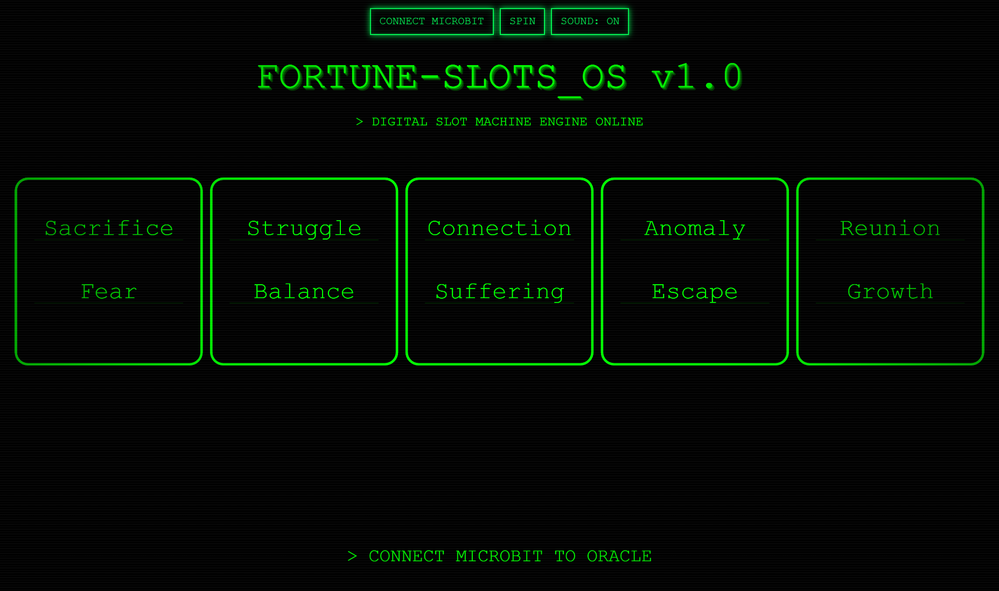
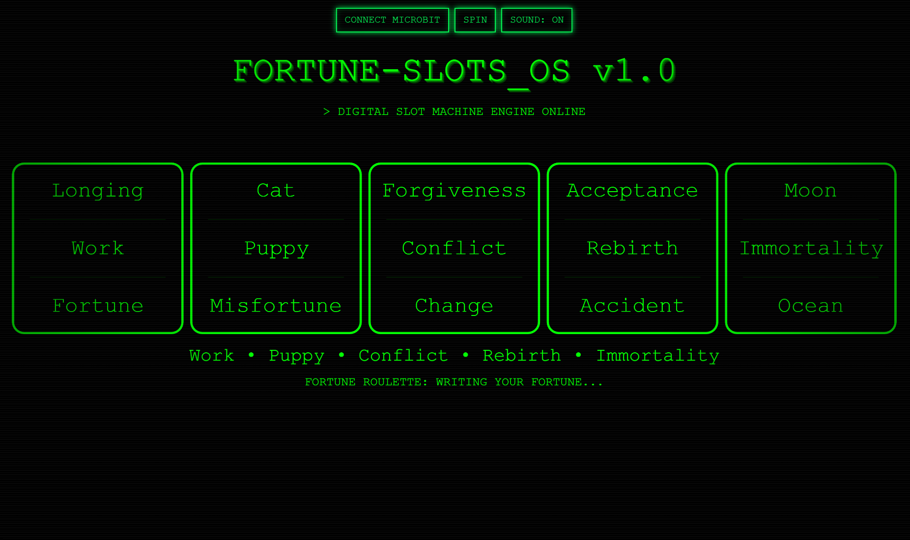
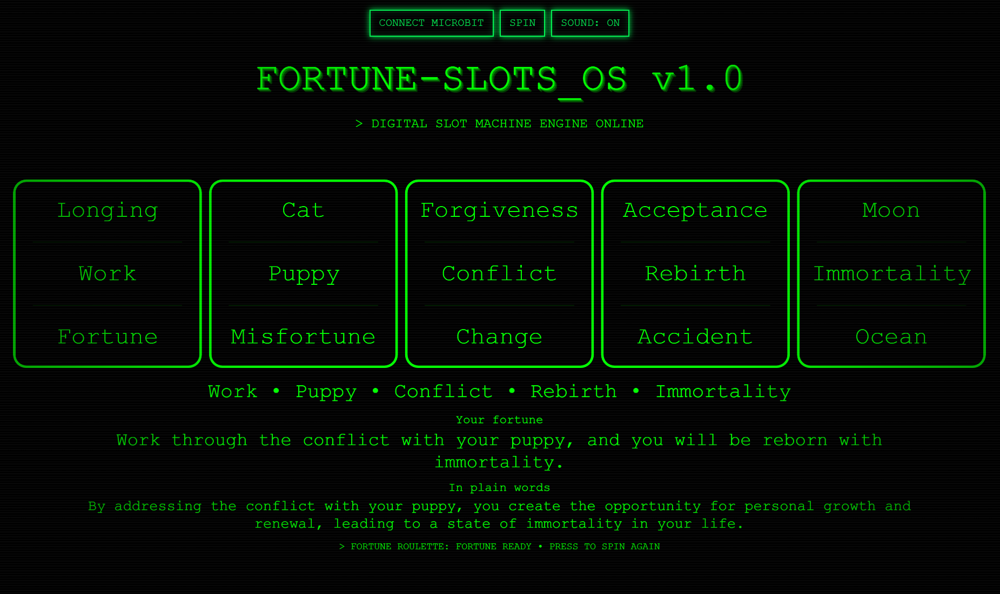

1. Spin
Five reels of words spin.
Pull the lever. Let five words decide your future.
A somewhat faithful recreation of the project, though with only 3 slots and no ai model.
Stop all five reels to reveal your fortune...
.-""""""-. / _ _ \ | (@) (@) | | | | \______/ | \ / '-.____.-'
Hampus Edgren
I'm Hampus, gambling fan and beuraucratic wunderkind - please adress me as such. I'm a student at Södertörn University, studying IT Media & Design and have created this project as my final assignment for the course Creative Coding together with my classmate Daniel Tytskiy.
Fortune Slots is a slot machine that tells your fortune. You press a button to stop five spinning reels, just like a real slot machine, but instead of fruit and sevens each reel lands on a random word. The five words are then sent to a local AI model that writes a short fortune for you.

Five reels of words spin.

You stop each reel and five random words are picked.

A local AI turns the words into a fortune.
The physical slot machine in all its glory. You are prompted to press the button which is connected via a series of connection cables to a microbit that sends serial to the laptop running the code.